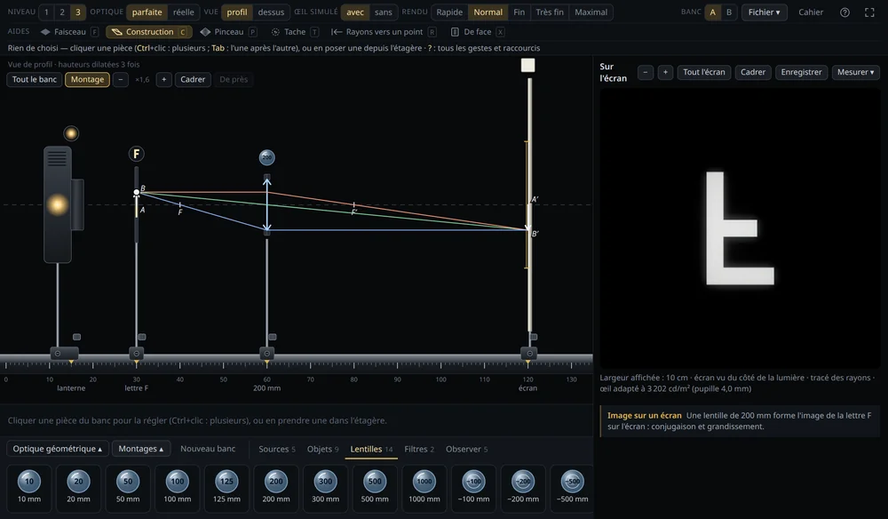
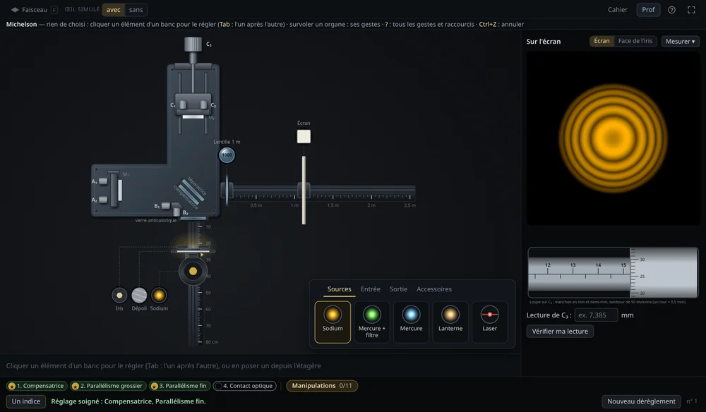
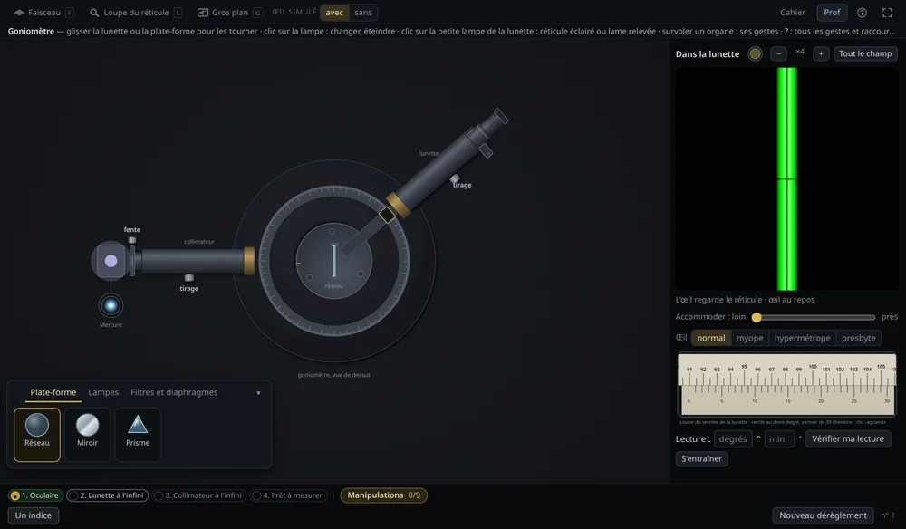

Banc d'optique, interféromètre de Michelson et spectrogoniomètre : trois instruments de TP à régler soi-même, dans le navigateur.
Version de travail : les instruments s'affinent encore au fil des séances, et certains détails peuvent changer d'une visite à l'autre.
Ces instruments reproduisent, dans l'obscurité d'une salle d'optique, le banc d'optique, le Michelson et le goniomètre des travaux pratiques de classe préparatoire. Rien n'y est réglé à l'avance : on tourne les vis à la souris, on déplace lampes, lentilles et écran, et l'on observe ce que donnerait l'instrument réel.
Ce qu'on voit est calculé à chaque instant et non pré-enregistré : figures d'interférence de la source étendue, rayons tracés à travers les lentilles, aberrations et diffraction, luminosité réelle, œil qui accommode. Elles servent à préparer une séance, à reprendre un réglage après coup, ou à montrer au tableau ce que la salle ne permet pas.

Optique géométrique et ondulatoire
Poser une lanterne, un objet, des lentilles et un écran ; chercher l'image, voir le faisceau et les rayons de construction ; passer aux fentes d'Young, à la diffraction et au filtrage spatial.
Ouvrir
TP Michelson · ondes lumineuses
Régler la compensatrice, passer des deux taches aux franges puis aux anneaux, chercher le contact optique, observer en lumière blanche ; mesurer un doublet, une lamelle, une longueur de cohérence.
Ouvrir
TP réseau et prisme
Régler l'oculaire à sa vue, la lunette par autocollimation, puis le collimateur ; tourner le réseau ou le prisme, lire le vernier, mesurer un minimum de déviation et identifier une lampe inconnue.
OuvrirUn ordinateur avec une souris et un navigateur récent (Firefox, Chrome, Edge, Safari). Rien à installer, aucun compte. Les tablettes et téléphones ne sont pas pris en charge.
Chaque instrument garde son état dans votre navigateur : on le retrouve comme on l'a laissé. Le bouton « Prof » propose des configurations types et dévoile les valeurs cachées du dérèglement.
Prise en main : gestes, aides et raccourcis de chaque instrument.
Modèle physique : le modèle optique des instruments, ses approximations et ses sources.
Un comportement étrange, une suggestion : écrire un message.
Depuis un instrument, le lien est en bas du panneau « ? » : il permet de joindre l'état actuel de l'instrument au message, pour retrouver exactement le réglage qui pose problème.